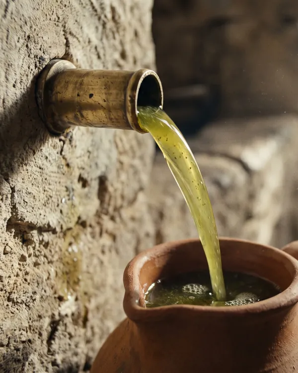

שלושת האויבים של שמן זית
שמן זית מתחמצן מאור, מחום ומאוויר. כל אחד מהם מאיץ את התהליך, ושלושתם יחד יכולים להפוך שמן מצוין לשמן שטוח תוך כמה שבועות.
- אור. שומרים בבקבוק כהה או בפח, בתוך ארון. בקבוק שעומד על אדן החלון יאבד את הטעם מהר.
- חום. הטמפרטורה האידיאלית היא בין 14 ל-20 מעלות. המקום הכי גרוע במטבח הוא ליד הכיריים או מעל התנור, גם אם זה הכי נוח.
- אוויר. סוגרים את הפקק מיד אחרי השימוש. ככל שהבקבוק מתרוקן יש בו יותר אוויר, ולכן כדאי לא להשאיר את הסוף שלו חודשים.
כמה זמן שמן זית טוב
בקבוק סגור שנשמר כמו שצריך שומר על הטעם שלו עד כ-18 חודשים מהקטיף. בקבוק פתוח כדאי לגמור תוך חודשיים עד שלושה. השמן לא יהיה מסוכן אחרי זה, אבל הריח הירוק והעקצוץ ייחלשו.
לכן חשוב לבדוק על התווית את תאריך הקטיף, ולא רק את תאריך התפוגה. תפוגה של שנתיים מהביקבוק יכולה להסתיר שמן שנקטף שנה לפני כן.
באיזה כלי לשמור
| כלי | מתאים? |
|---|---|
| זכוכית כהה | מצוין לשימוש יומי. חוסם את רוב האור |
| פח או נירוסטה | מצוין לכמויות גדולות. אטום לגמרי לאור |
| כד חרס מזוגג | טוב, אם הוא סגור היטב ונקי |
| זכוכית שקופה | רק אם שומרים אותה בארון סגור |
| פלסטיק | לא לטווח ארוך. אוויר ואור עוברים דרכו, והשמן עלול לקבל ממנו ריח |
מה עושים עם פח של 4 ליטר
פח הוא דרך מצוינת לקנות שמן לכל השנה, כי מתכת אטומה לאור. כדי שהשמן יישאר טרי עד הסוף:
- ממלאים בקבוק קטן לשימוש יומי ומחזיקים אותו ליד הכיריים, לא את הפח.
- שומרים את הפח סגור היטב בארון קריר או במזווה.
- לא מחזירים לפח שמן מהבקבוק, ולא מוסיפים שמן חדש על ישן.
- מנקים את בקבוק השימוש היומי ומייבשים אותו לגמרי לפני שממלאים מחדש.
בקבוק עם פיית מזיגה
פייה נוחה, אבל היא משאירה את הבקבוק פתוח לאוויר. אם משתמשים בה, כדאי לבחור פייה עם מכסה, לנקות אותה מדי פעם במים חמים ולייבש היטב, ולא למלא את הבקבוק על שמן ישן שנשאר בתחתית.
איך יודעים ששמן כבר לא טרי
מריחים. שמן שהתחמצן מריח כמו פלסטלינה, צבעי פנדה, אגוזים ישנים או מרגרינה. הטעם שלו שמנוני ושטוח, בלי מרירות ובלי עקצוץ. שמן כזה עדיין אפשר לאכול, אבל הוא כבר לא יוסיף הרבה למנה.
טיפ: לא צריך לשמור שמן זית במקרר. אם בכל זאת שמתם אותו שם, הוא יתעכר ויסמיך. זה לא קלקול, ואחרי כמה דקות בטמפרטורת החדר הוא יחזור להיות צלול.
